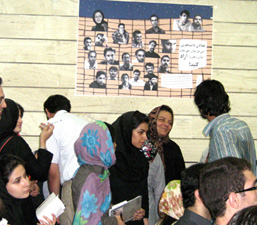

عصر روز یکشنبه 24 تیرماه با عنوان "دانشگاه و چشم انداز آینده" از سوی شاخه دانشجویان جبهه مشارکت در محل دفتر مرکزی این حزب به یاد
دانشجویان بازداشتی پلی تکنیک و همچنین دانشجویان بازداشت شده در 18 تیر برگزار شد. دراین مراسم فعالان جنبش زنان و دانشجویی نیز حضور داشتند.
دراین مراسم، دکتر بابک احمدی استاد دانشگاه و نویسنده از عبدالله مؤمنی سخنگوی سازمان ادوار تحكیم وحدت و بهاره هدایت رییس كمیسیون زنان دفتر تحكیم وحدت و سایر دانشجویان بازداشتی و نیز كسانی كه در جریان كمپین یك میلیون امضا علیه تبعیض حقوق زنان بازداشت شده اند بهنیكی یاد كرد و گفت: ما از آدمهای رادیكالی كه به حقوقبشر و دموكراسی اعتقادی ندارند خسته شدهایم. بههمین خاطر، باید كاری كنیم كه آنها مجلس ختم استبداد را بگیرند و عقلانیت به عرصه سیاسی ایران بازگردد. ما راهی نداریم جز انکه در برابر این جریان غیر عقلانی متحد شویم.
علی اکبر موسوی خوئینی ها دبیرکل سازمان ادوار تحکیم وحدت گزارشی از آخرین وضعیت بازداشتشدگان ارائه كرد و گفت: پیرو آزادی آقای قلندری، مطلع شدیم تمامی دوستانی که در ساختمان ادوارتحكیم دستگیر شدهاند، حکم بازداشت دریافت کردهاند و مشخص است سناریویی در حال اجراست که میخواهد تابستان دانشجویان را مشمول بازی خود قرار دهند.
وی سه موضوع را در رابطه با بازداشتهای اخیر قابل توجه دانست: دستگیری غیرقانونی دانشجویان، یورش بیسابقه به تشکلی قانونی و ضرب و شتم اعضای آن و پلمپ ساختمان آن.وی با اشاره به بیسابقه بودن چنین برخوردی با یك تشكل قانونی از سایر احزاب وتشکلها درخواست كرد که در برابر این حرکات ساکت ننشینند زیرا این برخوردها به زودی به تشکلهای دیگر نیز تسری خواهد یافت. او تاكید كرد: از سازمانها، شخصیتها و حتی مراجع تقلید میخواهیم در برابر این موضوع موضعگیری نمایند. همچنین از تمامی دانشجویان و دانشآموختگان خواهش دارم که مطالبات خود را از طریق قانونی و مدنی پیگیری کنند و اجازه ندهند مشتی افراد دیکتاتورمآب و وطنفروش مطالبات آنها را سرکوب کنند و برای این موجودات بحرانزی،زمینه بحرانی نسازند..
موسوی خویینی با اشاره به اینكه «نکات کلیدی درباره حقوق شهروندی این دوستان دربند باید رعایت شود»، افزود: طبق قانون که اجرای آن برای سپاه و اطلاعات الزامی است، احدی را حق ندارند در انفرادی نگه دارند و احدی را حق ندارند به زور وادار به اعتراف کنند یا به آنها چشم بند بزنند.
علی عبدی دانشجوی دانشگاه شریف با یاد آوری از دوست بازداشتی خود امیر یعقوبعلی گفت که او در عصر روز 18 تیر در حالی که برای تهیه مصاحبه در رابطه با کمپین یک میلیون امضا برای تغییر قوانین تبعیض آمیز به پارک رفته بود بازداشت شد و اکنون به جرم اقدام علیه امنیت ملی به اوین و بند 209 منتقل شده است . علی عبدی در ادامه افزود امیر یعقوبعلی دانشجوی رشته علوم ارتباطات دانشگاه علامه طباطبایی تنها به خاطر حرف زدن با مردم و تنها به همین جرم به زندان اوین منتقل شده و برای او 11 جرم برشمرده اند. وی جرم اقدام علیه امنیت ملی تعریف شده است .
فاطمه راکعی رئیس کمیسیون زنان جبهه مشارکت با اشاره به رویدادهای مشترکی که برای زنان و دانشجویان اتفاق افتاده این دو قشررا در اتفاقات پیش رو همدرد دانستند. او زنان و جوانان پیشاپیش هم پیام آوران صلح و آزادی درجهان هستند. وی همچنین شعر «زنی میگذرد..» را به بازداشتشدگان اخیر تقدیم كرد.
سعید حجاریان عضو شورای مرکزی جبهه مشارکت گفت: ظاهراً قرار است معاملهای صورت بگیرد كه در آن همه چیز معلوم است و بیعانه این معامله، نامه دانشجویان هستند و به عبارتی دانشجویان وجه المصالحه قرار گرفته اند. ترس من این است كه معاملات بزرگتری در راه باشد و حكومت بخواهد بیعانه بیشتری پرداخت كند و بنابراین، باید از دانشجویان دفاع كرد.
عباس عبدی گفت: حکومت ایران در شرایط كنونی، از طرفی «هلمنمبارز» میطلبد و آمریکا که سهل است، کل شرق و غرب را به مبارزه میطلبد؛ اما وقتی 6 دانشجو را جلوی دانشگاه نشستهاند را به نام امنیت ملی میگیرند، نشانه ضعف واقعی آنهاست.هیچ حکومتی نمیتواند ادعا کند که مردمی هستم اما چنین رفتاری بکند.تحصن شش دانشجو به کجای دنیا برمیخورد؟ یا چرا منصور اسانلویی را که اگر حتی تلفنی هم احضارش کنند با پای خودش می رود اینگونه می گیرند؟
در ادامه این نشست آرمان صداقتی دانشجوی دانشگاه امیر کبیر و تنها عضو بازداشت نشده انجمن اسلامی این دانشگاه با اشاره به روند شکل گیری پروسه حذف نیروهای انجمن اسلامی به انچه در دانشگاه های علامه طباطبایی و پلی تکنیک جریان داشت پرداخت و افزود پروژه ای برای حذف دانشجویان منتقد در جریان است اما در نهایت به شکست خواهد انجامید..
هدی صابرفعال ملی مذهبی گفت: اراده بخشی از حاكمیت این است كه دانشگاه غیر سیاسی و غیرزنده باشد. اما این موجود 73 ساله دوباره به دوران جنینی خود بر نمیگردد .اكنون اراده حكومت سركوب دانشگاه است و یا به دنبال فراری دادن چهرههای مؤثر آن به خارج از كشور است..